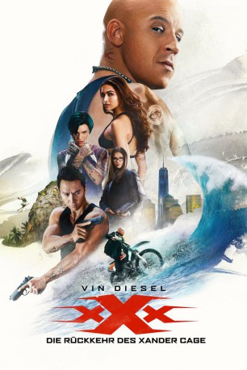

Alternativ: xXx: Return of Xander Cage gesehen am 17.06.2017
gesehen am 17.06.2017
 
 IMDB-Wertung: 5.2 / 10
IMDB-Wertung: 5.2 / 10  Metascore:
Metascore: 
Nach einem Zwischenfall wurde Xander Cage für tot erklärt. Doch in Wahrheit ist der einst zum Agenten ausgebildete Extremsportler quicklebendig. In einer neuen geheimen Mission wird er von seinem Vorgesetzten Augustus Gibbons auf einen gefährlichen Top-Secret-Auftrag geschickt. Der Krieger Xiang und sein Team düsterer Handlanger wollen sich eine Waffen namens Pandoras Box unter den Nagel reißen. Also rekrutiert Xander Cage seine ganz eigene neue Gruppe begabter Adrenalinjunkies, um ihm das Handwerk zu legen. Doch schnell findet er heraus, dass die Verschwörung, der er auf der Spur ist, bis in die höchsten Kreise der Regierung reicht.
Jahr: 2017
Dauer: 106 Minuten
FSK: 16
Land: USA Studio: Paramount PicturesTonspuren: DD5.1 - ,
Untertitel: Deutsch, Englisch,
Auflösung: 1080p (1920x800) Größe: 6840 MB
Genre: Action, Thriller, Abenteuer
Regisseur: D.J. Caruso
Drehbuch: Sandra Nettelbeck
Soundtrack:
Darsteller:
 Ruby Rose als Adele Wolff
Ruby Rose als Adele Wolff Tony Jaa als Talon
Tony Jaa als Talon Rory McCann als Tennyson Torch
Rory McCann als Tennyson Torch Samuel L. Jackson als Augustus Gibbons
Samuel L. Jackson als Augustus Gibbons Ice Cube als Darius Stone
Ice Cube als Darius Stone Hermione Corfield als Ainsley
Hermione Corfield als Ainsley Al Sapienza als CIA Director
Al Sapienza als CIA Director Nigel Bennett als MI6 Control
Nigel Bennett als MI6 Control Terry Chen als Chinese Politico
Terry Chen als Chinese Politico Shawn Roberts als Jonas
Shawn Roberts als Jonas Charles Carroll als Friendly Man
Charles Carroll als Friendly ManDatei: X:\3-Trilogie(N-Z)\xXx\xXx 3 - Die Rückkehr des Xander Cage (2017, FSK16, 1920x800) 3D.mkv seit 31.05.2017
Festplatte: HD Collection-3(N-Z)-6(A-Z)
 Es gibt insgesamt 7 Filme in der Gruppe '3-Trilogie(N-Z)\xXx'
Es gibt insgesamt 7 Filme in der Gruppe '3-Trilogie(N-Z)\xXx'